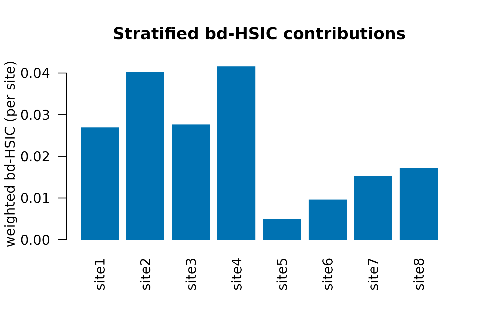

Hierarchical bd-HSIC for Multi-Site Designs
Max Moldovan
2026-05-31
Source:vignettes/kernR-hierarchical-bdhsic.Rmd
kernR-hierarchical-bdhsic.RmdWhy a hierarchical version of bd-HSIC?
Agricultural trials almost always carry design clustering: paddocks within sites, sites within regions, plots within farms, seasons within years. Treat such data as i.i.d. and the permutation null breaks: by shuffling treatment labels across clusters, the null distribution absorbs cluster-level variation as if it were causal signal, inflating Type I error.
The original bd-HSIC test (Hu, Sejdinovic & Evans, 2024) handles this by clustering on propensity-score similarity. That works when the design has no natural hierarchy. When the design itself tells you which observations should be exchangeable – site, paddock, season – you should use the design clusters directly.
bd_hsic_test() accepts an optional
cluster_id argument exactly for this case. Supplying it
activates within-cluster permutation: indices of
y are reshuffled only within each cluster, preserving
cluster-level effects in the null.
A multi-site stub
library(kernR)
# 8 sites x 30 plots/site = 240 observations.
# Each site has its own random effect on yield.
n_sites <- 8L
n_per <- 30L
n <- n_sites * n_per
site <- factor(paste0("site", rep(seq_len(n_sites), each = n_per)))
site_id <- as.integer(site)
set.seed(101L)
site_effect <- stats::rnorm(n_sites, sd = 1.0)[site_id]
# Confounders: rainfall, soil_n
z <- cbind(
rainfall = stats::rnorm(n),
soil_n = stats::rnorm(n)
)
# Management treatment (e.g. residue retention intensity)
x <- 0.4 * z[, "rainfall"] + 0.3 * site_effect + stats::rnorm(n)
# Yield: causal effect of management + confounders + site random effect
y <- 0.6 * x + 0.5 * z[, "soil_n"] + site_effect + stats::rnorm(n, sd = 0.5)Naive vs hierarchical permutation
The same data, two permutation schemes:
fit_naive <- bd_hsic_test(
x, y, z,
permutation = "naive",
n_permutations = 199L,
seed = 1L
)
fit_hier <- bd_hsic_test(
x, y, z,
cluster_id = site, # activates within_cluster by default
n_permutations = 199L,
seed = 1L
)
data.frame(
scheme = c(fit_naive$permutation_scheme, fit_hier$permutation_scheme),
stat = c(fit_naive$statistic, fit_hier$statistic),
p_value = c(fit_naive$p_value, fit_hier$p_value),
ess = c(fit_naive$ess, fit_hier$ess),
row.names = NULL
)
#> scheme stat p_value ess
#> 1 naive 0.02198144 0.005 119.9986
#> 2 within_cluster 0.02198144 0.005 119.9986In the presence of a true causal effect, both schemes typically reject; under the null, the naive scheme is more prone to false positives.
Stratified per-cluster contributions
When cluster_id is supplied, the result carries a
per-cluster bd-HSIC breakdown:
fit_hier$per_cluster_statistic
#> site1 site2 site3 site4 site5 site6
#> 0.026940010 0.040274145 0.027650642 0.041580679 0.005001357 0.009660079
#> site7 site8
#> 0.015288101 0.017232744Plot the per-cluster contributions to look for a single-site dominant signal vs. a uniformly distributed effect:
graphics::barplot(
fit_hier$per_cluster_statistic,
las = 2L,
col = "#0072B2",
border = NA,
ylab = "weighted bd-HSIC (per site)",
main = "Stratified bd-HSIC contributions"
)
A site whose stratified statistic dwarfs the others is a candidate for follow-up investigation – either real site-specific effect modification or a data-quality issue.
Type-I behaviour under a true null with cluster effects
To illustrate why the hierarchical scheme matters, here is the null
case: cluster effects exist, but x has no causal effect on
y.
set.seed(202L)
n_sites <- 8L; n_per <- 30L; n <- n_sites * n_per
site <- factor(paste0("s", rep(seq_len(n_sites), each = n_per)))
site_id <- as.integer(site)
site_effect <- stats::rnorm(n_sites, sd = 1.0)[site_id]
z <- cbind(stats::rnorm(n), stats::rnorm(n))
x <- 0.4 * z[, 1L] + 0.3 * site_effect + stats::rnorm(n)
y <- 0.5 * z[, 2L] + site_effect + stats::rnorm(n, sd = 0.5) # no x
fit_null <- bd_hsic_test(
x, y, z,
cluster_id = site,
n_permutations = 199L,
seed = 202L
)
fit_null$p_value
#> [1] 0.925Under the null, the hierarchical scheme should not reject
(p > 0.05); the naive scheme on the same data is more
likely to.
Choosing the scheme
| Scenario | Scheme |
|---|---|
| Truly i.i.d. observations, no design clustering |
permutation = "auto", no cluster_id
|
| Multi-site / multi-season ag design |
cluster_id = site (default within-cluster) |
| Within-cluster independence is plausible and you want maximum power |
permutation = "naive" (rare in practice) |
Notes on practice
-
Cluster size. Within-cluster permutation needs
>= 2test observations per cluster (test split =1 - split_ratioofn). Smaller clusters are reported asNAinper_cluster_statisticand contribute the identity permutation. - Many small clusters. When clusters are small (e.g. paddocks of 3-5 plots), within-cluster permutation has limited power; consider pooling at a coarser level (site instead of paddock).
- Imbalanced design. Per-cluster statistics are reported on the raw scale, not weighted by cluster size; combine externally if you need a size-weighted summary.